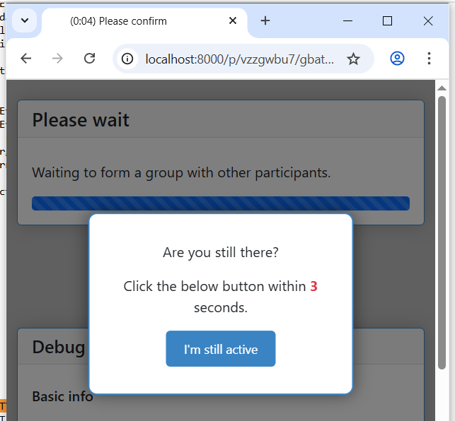
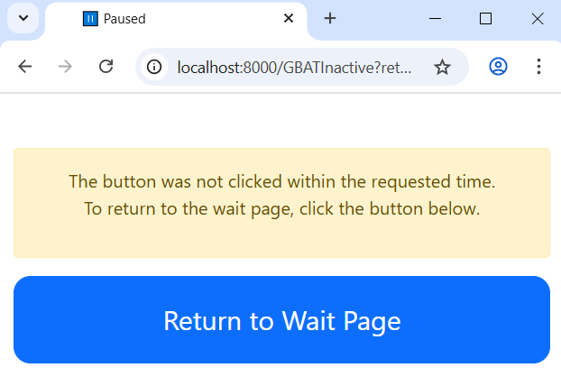
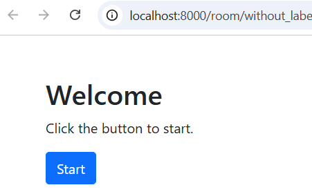
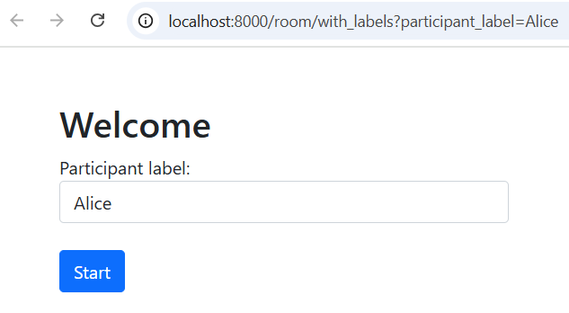

Version history
oTree 6.0
You can install this release with:
pip install otree --upgrade
Support for AI and web APIs (ChatGPT etc)
group_by_arrival_time presence detection
We changed how group_by_arrival_time excludes participants based on inactivity.
Previously, inactivity was automatically determined based on whether the tab is open and active.
Now, if a participant has not shown any signs of activity within 2 minutes (e.g. not moved their mouse), they are asked if they are still there. Note the live countdown is also shown in the page tab title:
{kind=link}

This starts a countdown. If they don’t respond within 15 seconds (by clicking the button or at least moving their mouse), they are sent to an “inactive” page with a big button they can click to return to the wait page:
{kind=link}

The timing parameters are configurable in settings.py (these settings are experimental and may be removed or changed):
GBAT_INACTIVE_SECONDS_UNTIL_PROMPT = 2 * 60
GBAT_INACTIVE_SECONDS_TO_CONFIRM = 15
Welcome pages for rooms
When you use a Room, oTree will always show a Welcome page that asks the user to confirm to start.
Room without participant label file:
{kind=link}

Room with participant label file:
{kind=link}

This solves the problem where start links were being opened by various platforms like WhatsApp that scan messages and open hyperlinks automatically, making oTree count those participants as having begun the experiment.
Furthemore, these welcome pages are customizable.
live_method on WaitPage
You can now define live_method on a WaitPage.
participant.status
There is a new field participant.status that you can set to anything you want,
e.g. finished, dropout, etc.
In the admin monitor page, there will be a dropdown that lets you filter based on this field.
(In the initial view, only participants whose status is blank will be shown.)
This is useful for things like hiding participants who are no longer doing the study,
or organizing participants into segments.
Multiple custom_export functions
Preserving unsubmitted inputs
DecimalField
oTree now has a versatile DecimalField, useful for enabling multiple currencies
as well as various other data types (percentages, durations, resources, etc).
See DecimalField.
Filtering fields in admin data view
See ADMIN_VIEW_FIELDS.
Improvements to admin interface
Many improvements to the admin UI.
Session-wide links
Previously, if a participant opened a session-wide start link twice in the same browser, it would use up 2 participants. Now, we check if the start link was already clicked, using a cookie. If yes, we continue where they left off.
Caveats:
This new behavior only applies with non-demo sessions.
You generally shouldn’t be using session-wide links anyway, room links are much more stable.
Number formatting
THOUSAND_SEPARATORsetting (to display numbers like “1,234,567.00”)to3andto4filters in templates
See Number formatting for details.
Data export
Automated data export added to REST API. Improved data export performance.
Misc
Bots do
custom_exportEasier debugging of live pages. JS console shows when there is a server error, and server tracebacks are shorter.
to3andto4filter in templatesgreen/gray presence icons in the “Monitor” page when participants are on waitpages
read_csv()supports semicolon delimited filesIn
DEBUGmode, at the bottom of the page there is a link to start as a new participant.Made navigation between room and active session more intuitive and clear.
live_methodcannot be a string anymore.chat widget now uses a
<textarea>instead of<input>.Async
live_methoddoes not work with bots andcall_live_methodyet.Easier to define custom wait page templates. You don’t need to set
template_nameon the page class anymore. Just like with regular pages, define a template with the same name, and oTree will automatically detect it.
oTree 5.10
For IntegerField/FloatField/CurrencyField, if min is not specified, it will be assumed to be 0.
If you need a form field to accept negative values, set min= to a negative value (or None).
Benefits of this change:
Most numeric inputs on mobile can now use the numeric keypad
Prevents unintended negative inputs from users. For example, if you forgot to specify
min=0for your “contribution” field, then a user could ‘hack’ the game by entering a negative contribution.
Other changes:
MTurk integration works even on Python >= 3.10 (removed dependency on the boto3 library)
Python 3.11 support
bots: better error message when bot is on the wrong page
oTree 5.9
Improved dropout detection
Renamed
formInputs(JavaScript variable) toforminputs5.9.5: fix bug that points inputs allow decimal numbers when they should be whole numbers.
oTree 5.8
Better dropout detection with group_by_arrival_time; see here.
Python 3.10 support
Fix various websocket-related errors such as ConnectionClosedOK, IncompleteReadError, ClientDisconnect that tend to happen intermittently, especially with browser bots.
oTree 5.6
Added access to form inputs through JavaScript.
oTree 5.4
PARTICIPANT_FIELDS are now included in data export
Radio buttons can now be accessed by numeric index, e.g.
{{ form.my_field.0 }}.Bugfix with numpy data types assigned to model fields
Misc improvements and fixes
oTree 5.3
Bugfix to deleting sessions in devserver
{{ static }}tag checks that the file existsIn SessionData tab, fix the “next round”/”previous round” icons on Mac
Fix to currency formatting in Japanese/Korean/Turkish currency (numbers were displayed with a decimal when there should be none)
allow error_message to be run on non-form pages (e.g. live pages)
Better error reporting when an invalid value is passed to
js_varsMinor fixes & improvements
oTree 5.2
For compatibility with oTree 3.x, formfield
<input>elements now prefix theiridattribute withid_. If you usegetElementById/querySelector/etc. to select any formfield inputs, you might need to update your selectors.The data export now outputs “time started” as UTC.
“Time spent” data export has a column name change. If you have been using the
pagetimes.pyscript, you should download the new version.
oTree 5.1
Breaking changes to REST API
oTree 5.0
oTree Lite
The no-self format
The beta method
Player.start()has been removed.cu()is now available as an alias forCurrency.c()will still work as long as you havefrom otree.api import Currency as cat the top of your file. More details here.oTree 3.x used two types of tags in templates:
{{ }}and{% %}. Starting in oTree 5, however, you can forget about{% %}and just use{{ }}everywhere if you want. More details here.All REST API calls now return JSON